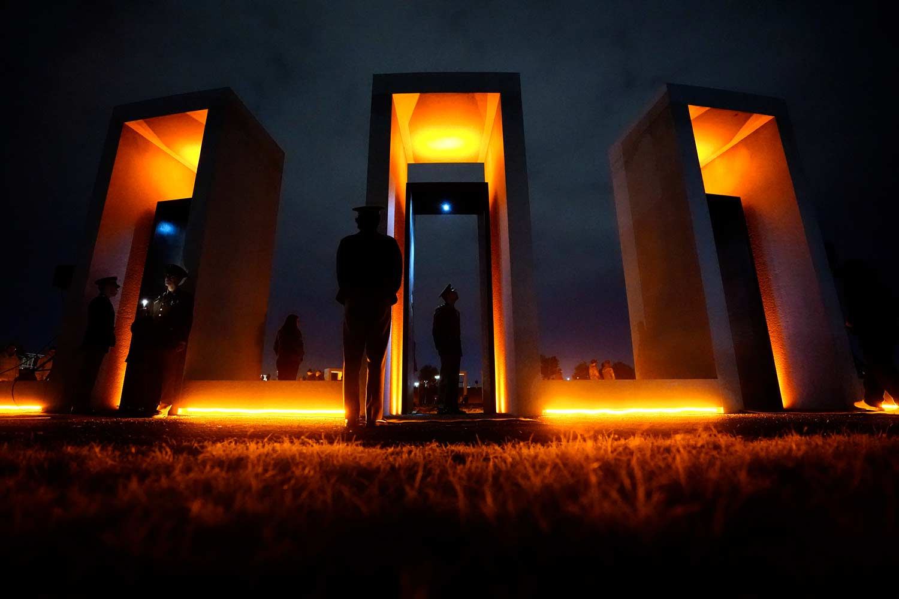

Tradition Name-Bonfire Memorial
Group Members: Philip Tran
Date:November 18, 1907
Home | Tradition | Group Members | New Tradition

Aggie Bonfire was originally a scrap heap created by students in 1907. Originally, it was used before a football rivalry game between Texas A&M University and University of Texas.
The scrap heap was primarily used to emphasize a clear motivation to defeat UT in a football game, emphasizing the "burning desire". Afterwards, for the next few decades, Aggie bonfires were created and burned making it a tradition to symbolize the Aggie Spirit.
However, on November 18, 1999 at 2:42 a.m, while the bonfire was being built, it spontaneously collapsed. Texas A&M students were caught in the collapse leading to 12 deaths and 27 injured.
As a result, the Bonfire Memorial was created 5 years later in order
to commemorate those who have been involved in the tragic incident. Today, thousands of students as well as visitors to Texas A&M University attend the Bonfire Memorial tradition occuring at the same time and location every year.
Information Table
| Bonfire Memorial |
Date Created
November 18, 1907 |
Created By Texas A&M University and its students |
| Link |
Where does the tradition takes place?
Located at Bonfire Memorial, Address: Texas A&M University, History Walk / Spirit Ring, College Station, TX 77843. |
Why this tradition?
To commemorate the Texas A&M students who have died or injured from the Bonfire Collapse from 1999. |
Fun Fact #1
The memorial consists of three main sections: Spirit Ring, History Walk, and Tradition Plaza. |
Fun Fact #2
At 2:42 when the tradition starts, Aggies pause in a moment of silence to honor those involved in the bonfire collapse. |
Fun Fact #3
The architecture firm, Overland Partners, designed the Bonfire Memorial Construction, led by Robert Shemwell '82. |
|